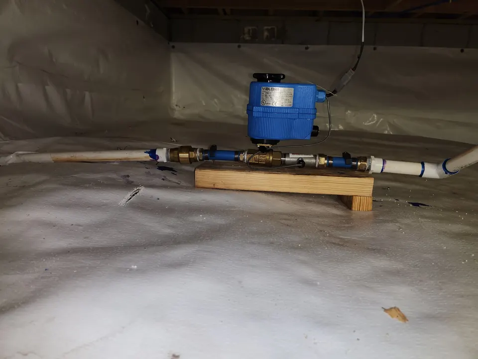

At Angle Stop Plumbing, we help homeowners protect what matters most with smart leak detection and automatic water shut-off solutions designed to stop damage before it spreads.
Learn More About Smart Plumbing Valves Today!
What Is a Smart Plumbing Valve?
A smart plumbing valve is an automated device installed on your home's main water line. It monitors water flow around the clock and can shut off the water supply immediately when it detects unusual activity or receives a signal from a leak sensor.

Unlike a standard manual shut-off valve, a smart valve is built to act fast, even when no one is home. That means your plumbing system is working behind the scenes to help prevent major water damage 24/7.
How Smart Leak Shut-Off Valves Protect Your Home
Smart plumbing technology combines real-time monitoring, leak detection sensors, and automatic shut-off control in one powerful system.
When a leak is detected, the system can:
- Identify abnormal water flow that may signal a burst pipe or running fixture
- Receive alerts from water sensors placed near high-risk areas
- Shut off the main water supply automatically within moments
- Send smartphone notifications so you know what is happening right away
This fast response can make the difference between a minor cleanup and a major home restoration project.
Why Homeowners Are Installing Smart Water Shut-Off Valves
A smart shut-off valve is one of the most effective ways to reduce the risk of hidden leaks and sudden plumbing failures.
Prevent expensive water damage
Leaks can destroy flooring, drywall, insulation, furniture, and personal belongings in a matter of hours. Automatic shut-off helps contain the problem before it gets worse.
Protect your home while you are away
Whether you are at work, on vacation, or simply asleep, your smart valve continues monitoring your plumbing system and responds instantly when needed.
Gain peace of mind
A smart plumbing system gives homeowners confidence that their property is protected even when a leak starts in an unseen area.
Support a safer, smarter home
Smart shut-off valves fit naturally into modern home protection strategies and pair well with other proactive home maintenance upgrades.
Common Places Where Leaks Begin
Many serious plumbing leaks start in areas homeowners do not check every day. Some of the most common trouble spots include:
- Under sinks in kitchens, bathrooms, and laundry rooms
- Behind toilets and around supply lines
- Near water heaters
- Behind washing machines
- Around dishwashers and refrigerators
- In crawl spaces, basements, and utility rooms
Angle Stop Plumbing can help identify vulnerable areas and recommend the right smart valve and sensor setup for your home.
Benefits of Professional Smart Valve Installation
Choosing a professional plumber for installation is just as important as choosing the right device. Proper placement, setup, and testing help ensure the system performs the way it should when every second counts.
With professional installation from Angle Stop Plumbing, homeowners get:
- Expert evaluation of the home's plumbing layout
- Correct installation on the main water line
- Sensor placement guidance for maximum protection
- System testing and setup
- Reliable performance from a trusted local plumbing team
A professionally installed smart shut-off system helps eliminate guesswork and gives you confidence that your investment is protecting your home.
Why Choose Angle Stop Plumbing?
At Angle Stop Plumbing, we believe prevention is one of the smartest investments a homeowner can make. Our team provides dependable plumbing solutions with a focus on safety, quality, and long-term protection.
Homeowners choose us because we offer:
- Knowledgeable plumbing professionals
- Customized smart valve solutions
- Prompt, courteous service
- High-quality installation and workmanship
- A commitment to protecting your home from costly leaks
We do more than install plumbing devices. We help homeowners build a stronger defense against unexpected water damage.
Smart Plumbing Valves Are a Smart Investment
The cost of repairing water damage can far exceed the cost of installing a leak detection and automatic shut-off system. A smart plumbing valve helps reduce risk, minimize damage, and protect your property before a small plumbing issue turns into a major emergency.
For homeowners looking to improve home safety, reduce stress, and modernize their plumbing protection, this technology offers real value.
Protect Your Home Before the Next Leak Happens
If you want a better way to safeguard your home from plumbing leaks, Angle Stop Plumbing is ready to help. Our smart plumbing valve solutions are designed to detect leaks quickly and shut off water immediately, helping you avoid costly damage and unnecessary disruption.
Protect your home with smart leak detection and automatic water shut-off from Angle Stop Plumbing. Contact us today to schedule an installation consultation.